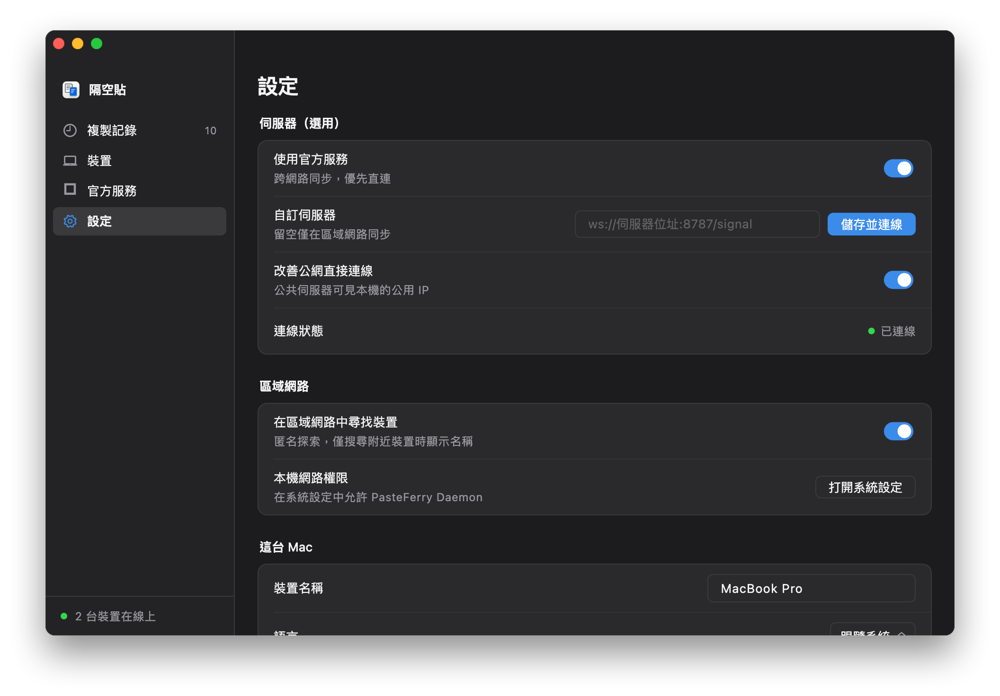
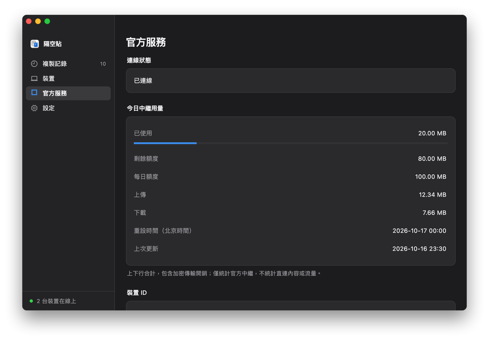

三個步驟，開始跨網路同步
- 在每台需要同步的電腦上安裝最新版本，啟用背景同步。
- 在每台電腦的「設定」中開啟「使用官方服務」，閱讀並確認必要統計說明。不需填寫官方網域或連接埠。
- 一台產生配對碼，另一台輸入；核對兩邊的安全指紋後確認。原有配對關係可繼續使用。

先直連，再中繼
官方信令只協助在線裝置交換連線資訊。用戶端先透過 STUN 探測和打洞；本輪直連失敗後，才申請官方中繼。傳輸內容始終端到端加密。
直連不消耗中繼額度
目前預設每機器額度組每日 100 MB 中繼流量，上傳與下載合計，北京時間午夜重設。重新安裝不保證獲得新額度。用量頁顯示實際額度、剩餘量與更新時間；額度用完仍可直連。額度與服務可用性可能調整，以用戶端顯示為準。
由你決定是否啟用
新安裝預設關閉。啟用後記錄必要連線統計；僅申請中繼時衍生專案專用機器摘要。真實裝置名稱、原始系統識別碼和複製內容不作為統計上傳。完整欄位與保留期限見隱私說明。
仍可獨立自建
區域網路、自訂伺服器與 Tailscale 繼續可用，不依賴官方網關。需要自行管理容量時，可選擇自建公網伺服器；在自訂位址旁點擊「儲存並連線」。
